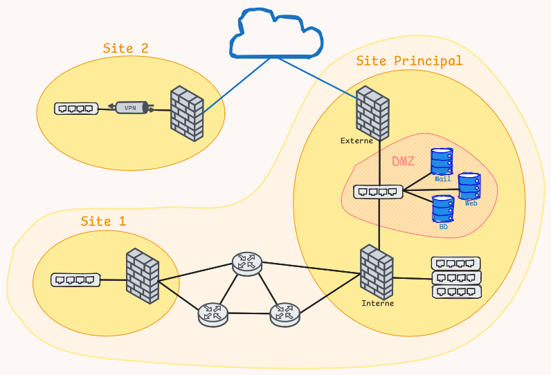
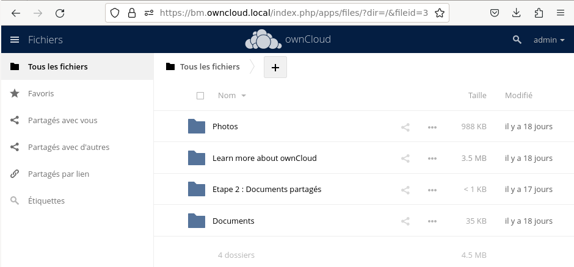

Mosna Annabelle
Actuellement étudiante en 3ᵉ année de BUT Informatique parcours Déploiement d’Applications Communicantes et Sécurisées (DACS), je suis également alternante à SNCF Réseau en tant qu'administratrice système et réseau.
Passionnée par les enjeux de sécurité informatique, mon objectif est de me spécialiser dans le domaine de la cybercriminalité et de contribuer à la protection des systèmes et des données.

Parcours
Académique
-
BUT Informatique - IUT Rangueil Toulouse
3ᵉ année spécialisée en Déploiement d'Applications Communicantes et Sécurisées
-
Baccalauréat 2022 - Lycée Victor Hugo Gaillac
Spécialités S.E.S et Littérature Anglaise
Professionnel
- Alternance SNCF (1 an) – Toulouse Installation d'un serveur de supervision
-
Stage SNCF (2 mois) – Toulouse
Configuration et sécurisation de switchs
Configuration de postes métier
Installation des switchs et postes sur site - Intérim (6 mois) – Tarn Opérateur machine / Manutention
Compétences
Voici les compétences que j’ai développées tout au long de mon parcours à l’IUT, que ce soit en informatique, administration système et réseau, ou en gestion de projets.
Réaliser
- Niveau 1: Développer des applications informatiques simples
- Niveau 2: Partir des exigences et aller jusqu’à une application complète
- Niveau 3: Adapter des applications sur un ensemble de supports (embarqué, web, mobile, IoT...)
Optimiser
- Niveau 1: Appréhender et construire des algorithmes
- Niveau 2: Sélectionner les algorithmes adéquats pour répondre à un problème donné
Administrer
- Niveau 1: Installer et configurer un poste de travail
- Niveau 2: Déployer des services dans une architecture réseau
- Niveau 3: Faire évoluer et maintenir un système informatique communiquant en conditions opérationnelles
Gérer
- Niveau 1: Concevoir et mettre en place une base de données à partir d’un cahier des charges client
- Niveau 2: Optimiser une base de données, interagir avec une application et mettre en œuvre la sécurité
Conduire
- Niveau 1: Identifier les besoins métiers des clients et des utilisateurs
- Niveau 2: Appliquer une démarche de suivi de projet en fonction des besoins métiers des clients et des utilisateurs
Collaborer
- Niveau 1: Identifier ses aptitudes pour travailler dans une équipe
- Niveau 2: Situer son rôle et ses missions au sein d’une équipe informatique
- Niveau 3: Manager une équipe informatique
Outils maitrisés
Programmation
PHP
Shell
Java
Python
C
Système et Réseau
Linux
Proxmox
Cisco
VMware
VirtualBox
Base de données
PL/SQL
MongoDB
NoSQL
Looping
Oracle
Projets
Déploiement d'une infrastructure
- Déploiement et administration de machines virtuelles sous Proxmox
- Configuration et gestion des services systèmes et réseaux
- Configuration opérationnelle des équipements réseau
- Mise en place de listes de contrôle d’accès (ACL)
- Configuration d’un VPN pour sécuriser les communications

Mise en place d’une machine virtuelle
- Installation et mise en service d’un serveur OwnCloud
- Mise en place et configuration du serveur Apache
- Sécurisation des échanges via le protocole HTTPS
- Administration à distance de la machine via SSH

Création d’un dashboard sur Oracle Apex
- Utilisation et exploitation d’une base de données relationnelle
- Manipulation et structuration des données
- Conception et développement d’un dashboard interactif

Création d’un Docker pour un site web
- Création et configuration d’un conteneur Docker pour un site web
- Gestion des services Apache et PHP au sein du conteneur
- Simplification du déploiement et de la maintenance de l’application
Nuit de l’Info 2024
- Gagnant du 2ᵉ Prix Eva : Optimisation et performance web
Contacts